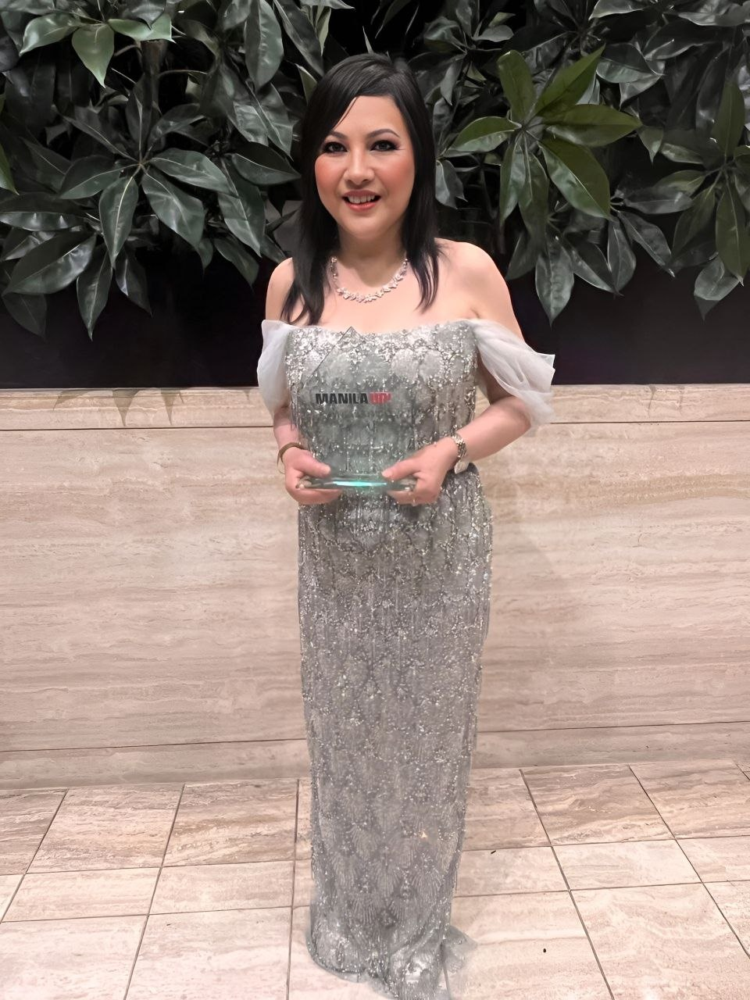
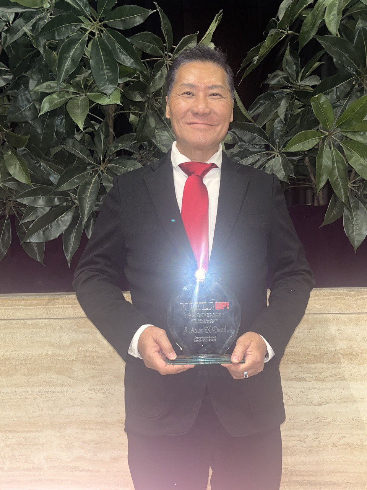

Honours Received
Awards of the Evening
Two distinguished awards were conferred upon SHEKINAIH SIEW SIN YAP and J AARON K DAVID in recognition of their extraordinary contributions to leadership, transformation, and global service.

01 · Awardee
SHEKINAIH
SIEW SIN YAP
Divine Restoration Ignition Award
Presented at the Manila Up International Magazine 10th Anniversary Gala, Hotel Indigo Los Angeles Downtown, 23 November 2025. Recognising her extraordinary mission as a visionary leader, humanitarian, and transformational voice bridging faith and global impact.

02 · Awardee
J AARON
K DAVID
Transformational Leadership Award
Presented at the Manila Up International Magazine 10th Anniversary Gala, Hotel Indigo Los Angeles Downtown, 23 November 2025. Recognising his steadfast leadership, cross-border influence, and quiet strength as a global architect of transformation and purpose-driven change.

SHEKINAIH SIEW SIN YAP&J AARON K DAVID